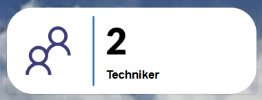

Benutzerhandbuch
pobvol Service Solution
Power App pssService Board
Stand: 9'25
Deutsch /
English
Benutzerhandbuch
pobvol Service Solution
Power App pssService Board
Stand: 9'25
Deutsch /
English
Top ↑
Der StartScreen der App pss Service Board zeigt im Bereich "Stammdaten" die Anzahl der zugeordneten Servicetechniker an.
Ein Klick auf diesen Container öffnet den Screen "App-Benutzer".
Techniker dürfen Stammdaten (Servicekunden, Kundeninventar, Serviceverträge) ansehen, Servicevorgänge erfassen, Serviceberichte anfordern und diese genehmigen. Servicevorgänge können jederzeit bearbeitet oder auch gelöscht werden, solange ein zugehöriger Servicebericht noch nicht genehmigt wurde.
App-Admins haben die gleichen Berechtigungen wie die Techniker, dürfen aber zusätzlich Stammdaten anlegen, ändern und löschen. App-Admins dürfen weiterhin die App-Benutzergruppen und die Tenant-App-Einstellungen bearbeiten.
Die App-Benutzergruppe "Serviceaufträge" darf Serviceaufträge und Erinnerungen erstellen, bearbeiten und löschen.